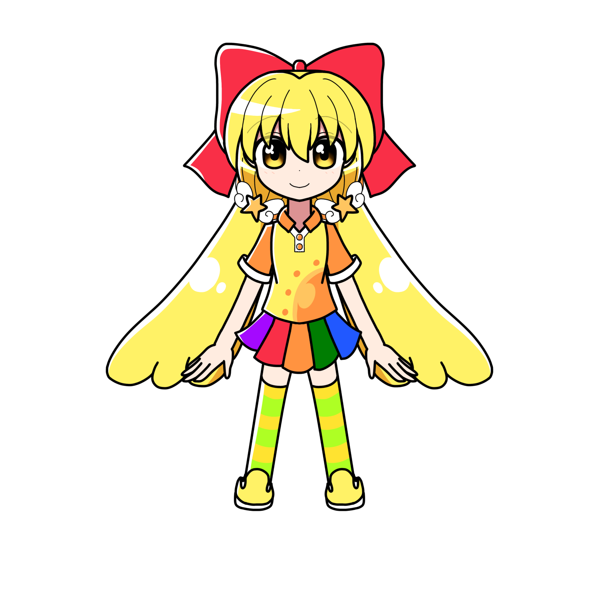

小鳥遊 メアリー
概要
その素性は、「黄金の天使」の異名を持つ財閥家系、
ウリエラ家の末裔。本名は「メアリー・ウリエラ」
プロフィール
| 種族 | ドール |
|---|---|
| 性別 | 女性 |
| 年齢 | 15歳 |
| 誕生日 | 7月21日 |
| 身長 | 150cm |
| 血液型 | O型 |
| 出身 | サハアヴェン |
| イメージカラー | 黄色（オレンジ） |
| イメージCV | 三森すずこ |
人物像
外見
明るくはっきりした黄色の髪。
ふわふわとしたロングヘアで、二つ結びにしている。
服装はアリス同様カラフルなデザインをしているが、
アリスのそれ以上に彩度が高めで全体的に派手な物を好んで着ている。
性格
元気いっぱいで明朗快活なムードメーカー。
陽気で前向きな性格。
どんなことでも楽しいと思える。
怖いもの知らずで、危険な場所に好奇心がまま飛び込む。
面白いことを思いついてはアリスやエルゼを巻き込む。
並外れた体力を持ち、疲れることを知らない。
運動神経そのものは抜群なのだが、
細かいルールが苦手でスポーツができない
（サッカーはボールを遠くに飛ばしすぎたり、
ソフトボールはファウルばかり）。
全く常識がないかと思いきやそうでもなく、
時にはド正論でツッコんだり、
周りがボケに回ると 呆れた表情になったり、
いざという時には冷静さを見せるなどの意外な一面がある。
現在の性格は、本来の性格ベースではあるのだが、
幼児退行と病弱時代への反動、諸事情で明るい自分を演じている、などの
様々な要素が混ざっている。
「素の性格はもっとしっかり者なのでは？」と噂されているが、
メアリー自身は「もっとしょーめんからあたしを見て！」と主張している。
埴輪をかわいいと思っており、埴輪グッズを集めている。
本はおろか漫画を読むことが苦手。
絵がかっこいいと感じることは可能だが、
話の内容やキャラクターが覚えられない。
アニメも内容を理解できずに激しいシーンばかり記憶に残る、とのこと。
練り物が苦手。本人曰く「おかずって感じがしな～い」
口調
一人称は「あたし」
中性口調。非常に子供っぽい喋り方をする。
能力
呪文は「ルルリームブルルームテルラルパパル」
雷属性のプリズムパワーを使う。固有魔法は「能力向上魔法」
対象の力、体力、頑丈さなどを一時的に強化する。
メアリーが誰かを連れまわす際は前もってこの魔法を掛けて相手を疲れにくくさせる。
魔力は全体的に火力が強く、加えて加減下手で、
しょっちゅう木を燃やしてしまったり、
他の人を感電させてしまったりと小さなトラブルを起こすことも。
経歴
生まれは裕福な財閥家系。
祖父が亡くなったことがきっかけで、
ウリエラ家は財産争いが始まる。
メアリーはそれに巻き込まれる形で
姉のように慕っていた親戚に裏切られ、
毒を盛られ、長い年月の闘病生活を送り、
現在はサハアヴェンの貧しい家で生活している。